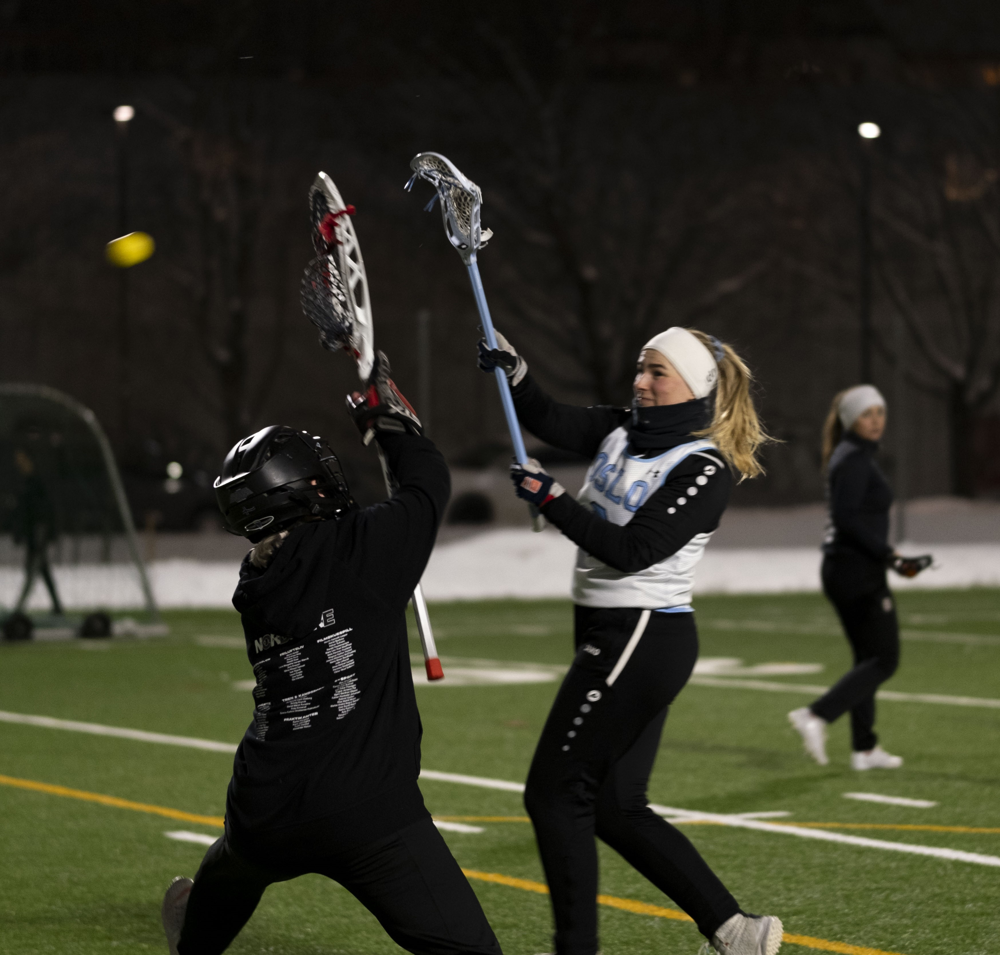
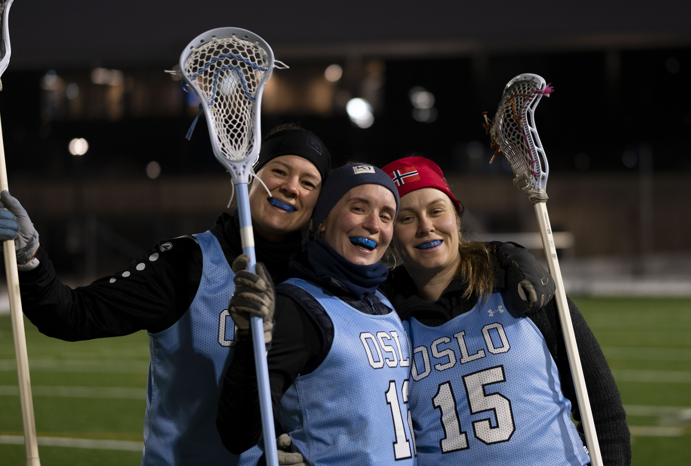
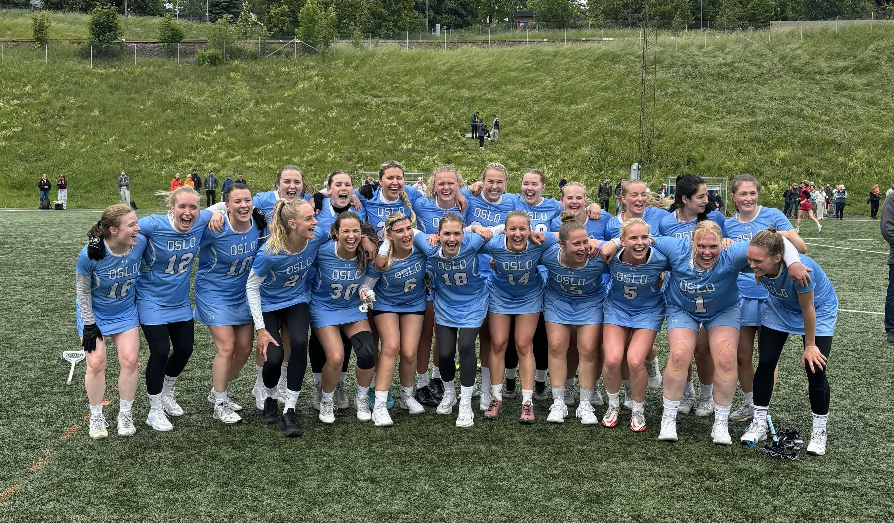

Lacrosse er en idrett med lang og stolt historie, helt tilbake til 1600-tallet. Dens opphav var som et spill mellom ulike grupper av urfolk i Nord Amerika og idrettens seremonier er fremdeles preget av deres rike tradisjoner. Idretten er en lagbasert ballsport som spilles med ti spillere på hvert lag, på en bane omtrent av samme størrelse som en vanlig fotballbane. Det finnes også innendørs lacrosse, kalt indoor eller box lacrosse. Spillerne er utstyrt med køller med en nettlomme i enden (la crosse) som brukes til å fange og kaste ballen mellom spillerne og i mål. Taktisk minner spillet mye om ishockey, hvor du har et offensivt spill som handler om å sette opp spill og skaffe medspillere åpne skudd, mens keeper er beskyttet av en vernet sone rundt målet. For herrer er spillet er svært fysisk og det brukes derfor beskyttelsesutstyr og hjelm. For kvinner er spillet noe annerledes. Nettlommen på crossen er ikke tillatt så dyp som for gutter dette gjør det enklere å slå ballen ut. Reglene for fysisk kontakt er også mye strengere og jentene bruker dermed mindre beskyttelsesutstyr. Lacrosse i Norge har i dag ca 1.000 aktive spillere i forbundets 16 medlemsklubber. Klubbene er i stor grad tilknyttet universitet og høyskoler, men det er også frittstående klubber. Seriespillet foregår i flere byer som helgeturneringer, med kvalifisering til Norgesmesterskapet som er i juni. I tillegg er det studentmesterskap og mindre turneringer. Forbundet organiserer landslag både for herrer og kvinner, med deltagelse i EM og VM, med gode resultater. Kilde: https://amerikanskeidretter.no/lacrosse/
Oslo lacrosse ble grunnlagt i 2016 av tidligere studentspillere, og er det første damelaget i Norge som ikke hører til et universitet.
Vi er et damelag som holder til i Oslo med jenter som har spilt alt fra 0 til 10+ år. Målet vårt er alltid NM-finalen, være mange på trening og ha det gøy sammen når vi spiller.
Vi har treninger to ganger i uken, deltar i eliteserien og deltar som regel på utlandsturnering minst én gang i året.
Oslo Lacrosse er et selvdrevet lag og har tre spillende trenere som har fordelt ansvarsområde over angrep, midtbane og forsvar.
Vi tar imot alle nye spillere, enten om man har lang erfaring eller ønsker å prøve på noe nytt.
Velkommen til oss!
Kontaktinfo
Leder: Stina Bjørnenæs, stina@oslolax.no.
+47 77 55 66 22


